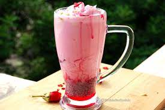

Rose faluda

Process
1.Set all the ingredients required to set the Falooda Cold glass, chilled Rose Milk, Rose Jelly, Rose Syrup ,Strawberry Ice Cream, soaked Sabja/Sweet Basil Seeds and cooked Vermicelli.
2.First add cut pieces of rose jelly as the first layer.
3.Add 1 tablespoon of rose syrup per serving as the next layer.
4.Follow it with 1 tablespoon of soaked Sabja/Basil seeds.
5.Next add 1-2 tablespoon of cooked Vermicelli.
6.Add 1.5 cups of chilled Rose Milk.
7.Add 1 scoop of Strawberry Ice Cream.
8.Top off with cut Rose Jelly pieces.
9.Serve cold or chillied immediately.